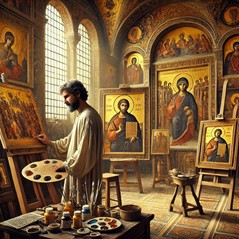
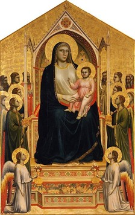

Soeur Wendy Beckett
NGHỆ THUẬT GOTHIC NGUYÊN THUỶ
Chủ đề của nghệ thuật gothic nguyên thủy trước hết là các chủ đề tôn giáo, và các bức tranh thường được dùng như là những "quyển sách hình" vì lợi ích của những người mù chữ. Những tác phẩm khác, như thánh tượng, phải gây cảm hứng cho sự nhập định và cầu nguyện. Những tác phẩm của các danh sư theo phong cách gothic phản ánh sự thuần khiết cao cả và sức mạnh tinh thần, lưu truyền truyền thống Byzance. Tuy nhiên, người ta cũng nhận thấy có nhiều sự cải cách, trong đó có tính hiện thực của nhân vật, phép phối cảnh và sự thanh tao đáng kể của đường nét.
Nghệ thuật gothic chủ yếu chiếm trọn ba thế kỷ cuối cùng của Thời
Trung Cổ. Thời Trung cổ kéo dài từ lúc thành Roma sụp đổ vào năm 410
cho tới dầu Thời Phục hưng, thế kỷ 15.
Từ "gothic" chỉ một thời kỳ hơn là một tập hợp những đặc tính của
một phong cách, một kiếu thức. Mặc dầu kiểu thức gothic có những
thành phần có ý nghĩa nhất định, nhưng để hiểu dễ dàng hơn nhiều
cách biểu thị của kiểu thức này, chúng ta cần nhắc lại rằng thời kỳ
này bao trùm hơn hai trăm năm và ảnh hưởng của nó lan tràn khắp châu
Âu. Ngay từ "gothic", mà người Ý là những người sử dụng đầu tiên,
lúc ấy chỉ với ý xấu, thứ nghệ thuật sinh ra vào cuối thời Phục
hưng, nhưng lại bắt chước nghệ thuật thời Trung cổ. Từ này có quan
hệ với một "qua khứ dã man", và nhất là với người Goths, một dân tộc
thuộc giống Đức cổ ở miền Bắc đã tràn vào nước Ý và cướp phá thành
Rome vào năm 410. Sau đó từ này mất dần nghĩa xấu và được dùng mô tả
một cách khái quát kiểu thức kiến trúc và phong cách hội họa mới,
xuất hiện sau thời kỳ La Mã và trước thời Phục hưng.
ẢNH HƯỞNG CỦA NỀN KIẾN TRÚC GOTHIC
Nhà thờ gothic khác với kiến trúc La Mã ở chỗ theo một phương thức
xây dựng mới, là vòm đường sống. Nhờ cấu trúc gia cường, các trường
mang không cần dày như trước. Ngoài ra, các vòng chống dã đỡ một
phần sức nặng ở phía ngoài có hiệu quả đến nổi cột và tường trong
không còn quá cần thiết để đỡ sức nặng của mái vòm. Nhờ vậy người ta
có thể xây tường mỏng hơn và thay thế một phần tường bằng cửa sổ
kính màu lớn để có nhiều ánh sáng.
Người ta thường tin rằng vòm gãy là một sự cách tân của kiến trúc
gothic. Thật ra, vòm gãy đã có trong nghệ thuật La Mã, nhưng nó được
sử dụng trong các nhà thờ kiểu gothic nhiều hơn. Với dạng ít cứng
rắn hơn vòm bán nguyệt, nó cho phép kiến trúc sư nhiều tự do lựa
chọn hơn. Những nhà thờ đầu tiên theo kiểu gothic đã được xây dựng ở
nước Pháp, nhất là ở Paris (Notre Dame), ở Saint Denis, và ở
Chartres. Một kiểu thức ít công phu hơn nhưng cũng tương tự đã xuất
hiện ở Anh, trong số đó có ở Salisbury. Những nhà thờ kiểu gothic
cũng được xây dựng ở Đức. Ý, Tây Ban Nha và Hà Lan.
Ở khắp nơi, sự sử dụng kính màu, mới mẻ và rực rỡ, cũng cho ánh sáng
nhuốm màu tràn ngập nhà thờ, tạo ra một không khí huyền ảo. Trong
khi trước kia cần tới một cấu trúc bằng đá để giữ vững khung kính
thì bây giờ một mạng lưới dây chỉ cũng đủ. Nghệ thuật cửa kính màu
đạt tới cực đỉnh ở nhà thờ Sainte Chapelle Paris: các cửa kính chiếm
ba phần tư diện tích mặt tường.
HỘI HỌA GOTHIC RA ĐỜI
Hội họa gothic ra đời ở Ý. Ở thế kỷ 13, hội họa Ý còn bị nghệ thuật
Byzance thống trị, mà ở Ý người ta gọi là “phong cách Hy Lạp”. Hội
họa Ý đồng hóa ảnh hưởng gothic chậm hơn kiến trúc và điêu khắc
nhiều. Chỉ vào cuối thế kỷ 13, phong cách gothic mới xuất hiện trong
những bức tranh tuyệt mỹ ở Florence và Sienne. Hội họa gothic nguyên
thủy tỏ ra hiện thực hơn nghệ thuật La Mã và Byzance. Nó tỏ ra say
mê rõ rệt phép phối cảnh và ảo ảnh của không gian thực, và sự thanh
tao tinh tế. Sự lý thú của câu chuyện bằng tranh và sự biểu hiện giá
trị tinh thần mạnh mẽ hơn, đôi khi cuồng nhiệt cũng là những đặc
trưng của nghệ thuật gothic nguyên thủy.
ĐOẠN TUYỆT VỚI NGHỆ THUẬT BYZANCE
Cuối thế kỷ 13, họa sĩ lỗi lạc nhất Florence là Cenni di Pepi tức
Cimabue (khoảng 1240-1302). Theo truyền thuyết, ông là thầy của
Giotto. Có quá nhiều tác phẩm được gán cho ông đến nỗi cuối cùng tên
ông tượng trưng cho một nhóm nghệ sĩ có cùng một khuynh hướng hơn là
một cá nhân riêng rẽ, mặc dầu chắc chắn, ông là người có thật.
Vẫn còn gắn bó với mỹ học Byzance, nên Cimabue dã đưa vào đó một yếu
tố cảm xúc và sống động, và mở đường cho chủ nghĩa hiện thực, chủ
nghĩa này sẽ đóng vai trò nền tảng trong nền hội họa phương Tây. F

Cimabue trong không gian làm việc mang phong cách mỹ học Byzantine
(Ảnh Chat GPT)
Chúng ta biết rằng năm 1272 Cimabue đã tới Roma lúc đó là nơi tự hội
những họa sĩ bích họa của nước Ý. Những họa sĩ này, cũng như những
nghệ sĩ tranh khảm đá ở thời đó, đang tìm kiếm một tính cách hiện
thực hơn, và có lẽ Cimabue cũng theo hướng đó. Họa sĩ được nổi tiếng
là do bức tranh Maestà, thoạt tiên được vẽ trong nhà thờ Santa
Trinita ở Florence. Từ Maestà nghĩa là "uy nghiêm" và chỉ một bức
tranh vẽ Đức Mẹ bồng Chúa Hài Đồng ngồi trên ngai, xung quanh có các
thiên thần. Bức Maestà của Cimabue có vẻ dịu dàng và tao nhã hơn,
chứa đựng cảm xúc hơn những vẻ mặt cứng nhắc và cách điệu của các
thánh tượng Byzance. Vẻ mềm mại của nếp áo cũng như không gian "mở"
theo ba chiều do chiếc ngai tạo ra, là những yếu tố cấu tạo hoàn
toàn mới và lý thú.
DUCCIO DI BUONINSEGNA VÀ TRƯỜNG PHÁI SIENNE
Mặc dầu tạo được những cách tân, tác phẩm của Cimabue cho thấy còn
thiếu bóng nổi nếu so với tác phẩm của Duccio di Buoninsegna (giữa
thế kỷ 13 - 1318). Hai người gần như là sống cùng thời.
Trong thế kỷ 13 và 14, thành phố Sienne cạnh tranh với Florence bằng
sự huy hoàng của nghệ thuật. Nếu Giotto đã làm một cuộc cách mạng
trong nghệ thuật Florence, thì Duccio và các môn đồ cũng có một ảnh
hưởng lớn, dầu ở quy mô nhỏ hơn. Tác phẩm của Duccio có một sức mạnh
lớn lao. Thành công lớn của ông là bức Maestà do thánh đường Sienne
đặt vẽ và được rước vào đó một cách tưng bừng vào năm 1311. Một nhà
ký sự của thời đó thuật lại: "Dân chúng Sienne mang bức tranh tới
nhà từ ngày 9 tháng 6 bằng một đám rước hoan hỉ và thành kính (...)
và ngày đó các hiệu buôn đóng cửa vì sùng đạo." Thật không thể tưởng
tượng được là tác phẩm lớn đó lại có thể bị cắt ra từng mảnh và đem
bán có lẽ (ít nhất cũng là từng phần) vì đơn giản là người ta không
thích nó nữa. Nhiều viện bảo tàng trên thế giới đã được lợi vì
nghịch thuyết văn hóa đó và ngày nay còn giữ được những mảnh của bức
tranh.
Bức Maestà của Duccio được vẽ trên hai mặt, mặt trước có ba phần.
Tấm chính thể hiện Đức Mẹ và Chúa Hài Đồng ngồi trên ngai, xung
quanh là các thiên thần và các thánh. Phần dưới bức tranh là một dải
hình ảnh Chúa Hài Đồng lúc còn thơ ấu. Một dải phía trên cho thấy
các giai đoạn cuối cùng trong cuộc đời Đức Mẹ. Hai dải đó ngày nay
đã mất. Mặt sau trình bày những hoạt động trong cuộc đời của Chúa
Jesus (chúng ta biết là có hai mươi sáu cảnh).
Các Bà thánh thiện ở Phần mộ là một phần những cảnh ở mặt sau của
bức Maestà vẫn còn ở Sienne. Ở thời điểm của giai đoạn Khổ nhục đó
của Chúa, ba bà Marie đứng trước ngôi mộ trống rỗng của Chúa, thiên
thần Gabriel báo trước cho họ sự Phục sinh. Tính khắc khổ mạnh mẽ và
sự thanh tao của tác phẩm này làm chúng ta ý thức trọn vẹn về sức
mạnh của thông điệp của Chúa.
Cũng như Giotto, Duccio lưu tâm tới mối quan hệ sâu sắc thiêng liêng
giữa các phụ nữ đó trong thời điểm Khổ nhục của Chúa hơn là đặc điểm
của mỗi người. Các hình diện có vẻ dao động bằng cách xích lại gần
nhau mà không chạm vào nhau. Họa sĩ phát hiện cho chúng ta một thế
giới tinh thần mà bản thân họa sĩ cũng như mọi người đều không hiểu
được. Sự chừng mực tuyệt hảo và tính dửng dưng trong tác phẩm của
Duccio là một số phẩm chất đặc trưng nhất. Dường như ông vẽ với một
sự dửng dưng nhất định, trong khi Giotto đồng nhất hoàn toàn với câu
chuyện, mà ông kể lại và tạo ra một hoạt cảnh thật mà ông lôi cuốn
chúng ta vào.
Nếu bố cục quy ước khá cứng nhắc của tấm tranh mặt trước bức Maesta
mang dấu ấn của truyền thống Byzance thì ảnh hưởng của Bắc Âu (mà
Duccio tiếp xúc qua tượng điêu khắc của Nicola và Giovanni Pisano)
cũng có thể nhận thấy ở hình dạng thanh tao và mềm mại của các hình
diện, một trong những thí dụ đầu tiên về sự tinh tế là đặc trưng của
toàn bộ nền hội họa gothic.
Duccio đã mang lại một sự thay đổi thật sự về phong cách và ảnh
hưởng của ông còn lớn hơn ảnh hưởng của Cimabue nữa. Nhân vật của
ông có một thể khối nhất định và quần áo của họ rũ xuống thành những
đường mềm mại, uốn lượn để cho ta đoán được hình thể bên dưới. Những
tấm tranh mặt sau của bức Maestà, dù khuôn khổ nhỏ, được vẽ với một
ý thức về sự cân đối và sự giản dị táo bạo mà thời đó còn chưa biết.
Bức Maestà là bức tranh còn lại duy nhất của Duccio.
THIÊN TRIỆU CỦA CÁC TÔNG ĐỒ
Một tấm tranh nhỏ khác ở phần dưới mặt sau của tác phẩm của Duccio
di Buoninsegna có tên Thiên triệu của các tông đồ Pierre và Andre là
một hình ảnh trần trụi và trong sáng, có một sức mạnh phi thường.
Duccio chia thế giới ra làm ba: bầu trời rộng lớn ứng vàng, biển
xanh cũng ửng vàng và bờ đá ở một bên bức tranh, nơi Chúa đứng. Ở
giữa, hai anh em André và Pierre kinh ngạc về phép lạ đã làm xáo
trộn cuộc sống thường ngày của họ. Họ đã quăng lưới suốt đêm mà
không được con cá nào. Jésus kêu họ quăng lưới ở một bên thuyền, và
họ đã nghe lời người lạ mặt. Lưới kéo lên đầy cá nhưng hai người có
vẻ không chú ý tới chút nào. Pierre quay lại, dò hỏi, còn André bất
động và hoài nghi, dường như đang nhìn chúng ta.
Quần áo của hai tông đồ màu sáng. Jésus mặc màu đỏ sẫm, tượng trưng
sự khổ nhục, và màu tía để chỉ thân phận đế vương; đường viền chỉ
vàng ấn định đường nét.
Vầng hào quang, tượng trưng thần thánh, có nguồn gốc từ Ba Tư cổ và
chỉ tia sáng mặt trời và quyền lực.
Vầng hào quang xuất hiện lần đầu tiên trong nghệ thuật cơ đốc giáo
vào thế kỷ thứ 4. Ở đây, vầng hào quang của Chúa được khắc thẳng vào
gỗ, đặc trưng của hội họa gothic trên bản gỗ, cũng thường được khảm
đá quý. Ánh sáng gặp những đường gãy tạo cho nó ánh chói cho phép
phân biệt vầng hào quang với bầu trời.
Duccio mô tả Chúa dưới hình thức một vị đế vương uy quyền. Bàn tay
của Người đưa về phía hai ngư phủ, những lời kêu gọi của Người là
một mệnh lệnh nhân từ hơn là một lời mời gọi bình thường. Chúa đi
chân đất, đứng trên tầng đá, biểu tượng của Giáo hội và nói với
Pierre, cái tên mà Người đã chọn.
Trên gương mặt của André người ta thấy sự phát hiện lòng tin. Trong
khi Pierre (mà theo Kinh Thánh là người hoạt động hơn) quay về phía
Chúa, André có vẻ lắng nghe tiếng gọi của một người vô hình. Ông nấm
dây kéo lưới đầy cá, động tác ngừng lại như tê liệt, và trên mặt dần
dần hiện lên ý thức về điều vừa xảy ra cho mình.
Lưới kéo lên đầy cá, biểu tượng của sứ mạng tông đồ phong phú và kết
quả. Dù được kéo căng, lưới cũng phủ chồng một lớp màu xanh trong
suốt trên nền ửng vàng. Duccio ít chú ý tới không gian ba chiều, và
chiếc thuyền là một thứ lục bằng gỗ, lướt trên nước, chỉ vừa đủ lớn
cho hai người đánh cá.
GIOTTO, ÔNG TỔ CỦA HỘI HỌA TÂY PHƯƠNG
Nếu Duccio đã phát minh lại nghệ thuật Byzance thì người đồng song
người Florence của ông Giotto di Bondone (khoảng 1267-1337) đã biến
đổi nền nghệ thuật đó. Sự tìm tòi có tính cách mạng về hình thể và
cách mô tả không gian nặng tính "kiến trúc" và hiện thực của ông và
các hình diện của ông cân đối với công trình xây dựng và phong cảnh
xung quanh), đã cho lịch sử hội họa một sự tiến bộ lớn. Tác phẩm của
Giotto đã được mọi người coi là tột đỉnh của hội họa gothic. Lần đầu
tiên, hội họa châu Âu có được cái mà sử gia Michael Levey gọi là
"một cá tính sáng tạo lớn". Thế mà, kỷ nguyên của "cá tính" là kỷ
nguyên Phục hưng, nên, đối với các chuyên gia, Giotto đã đánh dấu
bước đầu của kỷ nguyên đó không phải là không có lý do. Ông là gương
mặt vô song của thời đại mình và đi trước cả thời đại mình. Tuy
nhiên, ông đã sinh ra trong thời kỳ mà chúng ta gọi là "gothic", với
không khí của sự thanh lịch tinh thần và lòng yêu chuộng màu sắc
tươi mát và vẻ đẹp của thế giới hữu hình. Các họa sĩ gothic tạo thể
khối và sự vững chắc cho một thế giới mà các họa sĩ tiền bối chủ yếu
chỉ nhìn thấy dưới dạng đường nét hai chiều và thiếu tính vật chất
mặc dầu có tính động về mặt tinh thần.
NHỮNG NGHỆ SĨ ĐÃ ẢNH HƯỞNG TỚI GIOTTO
Chúng ta biết rằng Giotto đã tới Rôma vào năm 1300 để vẽ một bức
bích họa trong cung Latran. Ông đã thu thái được những cách tân của
Pietro Cavallini, nghệ sĩ La Mã mà các bức bích họa và tranh khảm đá
cho thấy một khuynh hướng tự nhiên đáng kinh ngạc. Bích họa của
Giotto vượt trên ảnh hưởng La Mã mà không mượn phong cách Byzance
như ở Cimabue. Đối với Giotto chỉ có thế giới thực tại là đáng kể.
Năng lực nhận thức bẩm sinh của ông về hình thể tự nhiên, sự tìm tòi
của ông về thể khối điêu khắc, và tính nhân bản tự nhiên và sâu sắc
của ông, đã biến đổi trào lưu hội họa.
Những nhà điêu khắc người Ý thời đó, như Nicola Pisano (khoảng
1220-1283) và con trai là Giovanni (khoảng 1250-sau 1314) đã tranh
đua với Giotto bằng thiên tài cách tân của mình và đã có ảnh hưởng
lớn tới cách nhìn thế giới của ông.
Nicola Pisano đã sống ở Toscane, quê hương của Giotto, vào năm 1250.
Đặc biệt quan tâm nghiên cứu tượng điêu khắc cổ, ông đã gây một ảnh
hưởng quyết định, chủ yếu lấy cảm hứng từ nghệ thuật gothic Bắc Âu.
Triều đình Anjou thiết lập ở Naples khoảng năm 1260 đã tạo định
hướng mới cho nền điêu khắc Ý. Nghệ thuật của Pisano cho thấy một
tinh thần hiện thực và một kỹ thuật phỏng hình có sức biểu hiện
thuyết phục, khác xa với sự nặng nề và gần như cách điệu của nền
điêu khắc Toscane thời đó.
Khi so sánh tranh của Giotto với tượng của Pisano, ta có thể giải
thích phần nào quá trình tiến hóa của họa sĩ về mặt hội họa: sức
mạnh về mặt tạo hình của hình thể và không gian ba chiều đã xâm
chiếm bức tranh thiếu hình nổi trước kia, và hội họa trở nên sống
động, từ nay dứt bỏ được truyền thống cứng nhấc và cách điệu của
Byzance.
Tranh trên bản gỗ của Giotto có khuôn khổ nhỏ hơn bích họa, nhưng
họa sĩ có vẻ vượt lên khỏi chi tiết đó. Một bức tranh nhỏ như Đức Mẹ
và Chúa Hài Đồng (hình 5) chứa đầy cảm xúc mạnh mẽ khiến cho bức
tranh có vẻ lớn hơn. Đức Mẹ nhìn chúng ta một cách dịu dàng và Chúa
Hài Đồng ngồi trên tay bà như ngồi trên ngai. Vẻ cao quý của các
nhân vật chẳng những không xa cách chúng ta mà còn khuyến khích
chúng ta tiếp cận một cách tôn kính.

Giotto di Bondone, Đức Mẹ và Chúa Hài Đồng (Ognissanti Madonna)
325 cm × 204 cm (128 in × 80 in) Uffizi Gallery, Florence
BÍCH HỌA CỦA GIOTTO
Nhà nguyện Scrovegni (Arena) ở Padoue được trang hoàng bằng những
tác phẩm đẹp nhất của Giotto còn giữ được, một hệ bích họa vẽ khoảng
những năm 1305-1806, trình bày những cảnh trong giai đoạn khổ nhục
và trong cuộc đời của Đức Mẹ Đồng trinh.
Một trong các bích họa, Than khóc trước di hài của Chúa trên bức
tường phía bắc nhà nguyện, là kết cục của cầu chuyện mà chúng ta đã
thấy phần đầu trong bức Thiên triệu của các tông đồ Pierre và Andre
của Duccio. Giotto đã đem tất cả tài năng của mình để minh họa một
trong những giai đoạn nổi bật nhất trong cuộc đời của Chúa Jesus.
Tương phản cái vẻ uy nghi xa cách, nặng nề của Đức bà trong tranh
của Duccio và Cimabue, Giotto đặt tình tiết ngang tầm với chúng ta,
với sự chân thực đáng xúc động, và ông biến cải sự kiện thành một
cảnh bi thương rất mực. Ở tiền cảnh, mỗi nhân vật đều được nhận rõ
và có một hành động cụ thể. Đức Mẹ Maria được vẽ gần giống đàn ông
(Giotto luôn luôn vẽ bà cao lớn và đường bệ), ôm siết thân mình Chúa
đã chết, thảm thiết, đau buồn nhưng cố kiềm chế. Marie Madeleine
cung kính nâng chân Chúa, mắt trào lệ, nhìn dấu đinh. Thánh Jean
giang hai tay, dáng điệu tuyệt vọng trước một thực tế kinh khủng.
Hai người đàn ông lớn tuổi hơn, Nicodème và Joseph ở Arimathia, đứng
hơi xa một chút, phân vân và suy sụp, trong khi những người đàn bà
đã an ủi Đức Mẹ ở dưới chân thánh giá giờ đang than khóc và cố kìm
nước mắt. Mặt đất vấy máu không phải là chỗ của các thiên thần nên
họ bay lượn trên không, biểu lộ sự đau buồn.
Ở hậu cảnh, một cái cây đơn độc và trơ trụi trên sườn đồi khô cằn
gợi ý cái chết thảm khốc, nhưng một ánh sáng kín đáo lan tỏa trong
bầu trời xanh thẩm. Giotto và người đương thời biết rằng Chúa sẽ
sống lại, dầu các thiên thần hết sức đau đớn có vẻ không biết điều
đó. Sự trang nghiêm và cảm xúc bị kìm chế của Đức Mẹ có lẽ do tính
chắc chắn của lời tiên tri này. Nhờ có sức mạnh của lòng tin của
Giotto mà chúng ta có ý nghĩ này. Ngay màu sắc và hình thể trong
sáng, đậm đà, đầy đặn và trực tiếp cũng khẳng định tính chắc chắn
thần bí kia, bất chấp sự tuyệt vọng trông thấy trước mắt. Sáu thế kỷ
sau, Henri Matisse khẳng định rằng không cần biết Phúc âm cũng hiểu
được tranh của Giotto bởi vì bản thân nó có chân lý riêng.
SỰ PHẢN BỘI CỦA JUDAS
Giotto tỏ ra là một tài năng tuyệt vời khi vẽ một cảnh thương tâm
xung quanh một hình ảnh trung tâm. Bức Cái hôn của Judas, một bích
họa khác của nhà nguyện Scrovegni, gợi ý chuyển động; mỗi nhân vật
đều hành động, theo hay chống lại Chúa. Đuốc cháy sáng, khí giới
quay mòng. Nhưng trung tâm của cảnh náo động thì im lìm bi thảm,
Jesus nhìn sâu vào mắt giả dối của Judas, môn đồ của mình, mà tính
xảo quyệt đối đầu với lòng yêu thương đau đớn của tôn sư. Kẻ phản
bội và người mà hắn phản bội họp thành yếu tố trung tâm, cô đọng và
gần như sờ thấy được, chiếc áo choàng của Judas với màu vàng tượng
trig, bao bọc Chúa Jesus như thể nuốt chửng lấy người. Trong toàn bộ
tác phẩm của Giotto các gương mặt có tầm quan trọng lớn nhất, đó là
chiếc gương phản ánh thảm kịch của con người.
Trong hệ các bích họa, cảm xúc cũng được thể hiện bằng nét mặt,
hướng mắt nhìn, ngôn ngữ đơn sơ của cơ thể. Đối với Giotto, nghệ
thuật luôn luôn là một sự cộng thông.
CÁI HÔN CỦA JUDAS
Judas là tông đồ đã phản bội Jesus, đã nạp ông cho nhà cầm quyền và
không chịu đựng nồi hậu quả hành động của mình, đã treo cổ tự từ.
Tác phẩm của Giotto mô td lúc Judas chi điểm Jésus cho các tu sĩ và
quân lính bằng cách ôm hôn ông.
THỜI GIAN NGƯNG ĐỌNG
Chúa Jesus và Judas họp thành hình ảnh bất động duy nhất trong cảnh
náo động này, Chúa là hình ảnh của sự kiên cường, dũng cảm. Vầng
trán thanh thân và cái nhìn đăm đăm của Người tương phản với nét mặt
nhăn nhó và bối rối của Judas. Giotto đã làm cho thời gian ngưng
đọng và, trong cái nhìn dò hỏi của Jésus, ta thấy Người đã biết sự
phản bội của Judas và tình thương của người đối với kẻ phản bội.
PIERRE BẢO VỆ JÉSUS
Bố cục toàn thể xoay quanh hai gương mặt của Chúa Jesus và Judas.
Gươm giáo và đuốc tua tủa ra mọi phía bắt đầu từ hai nhân vật trung
tâm gần như tạo thành một vầng hào quang, hoặc trút về phía họ. Vị
tu sĩ đang cử động bên phải cân bằng với-tông đồ Pierre ở bên trái;
trong con phẫn nộ, Pierre đã cắt đứt vành tai của một người lính.
JÉSUS BỊ BẮT
Giotto cho đám quân lính dày dực và trật tự cái sức mạnh của một con
sóng thần không ngăn cản nổi. Họ tiến tới phía Chúa trong một chuyển
động đồng loạt. Số đông quân lính không thể nhận ra được, và chỉ
gươm giáo nghiêng nghiêng của họ cho thấy hàng ngũ của họ.
SỰ HỢP NHẤT CÁC NHÂN TỐ GOTHIC
Nghệ sĩ thể hiện được tinh hoa của nghệ thuật gothic là Simone
Martini (khoảng 1285-1344). Trong tất cả họa sĩ Sienne, ông là người
duy nhất có thể sánh được với thầy mình, Duccio di Buoninsegna. Vì
Martini là kẻ thừa kế trực tiếp về mặt nghệ thuật của Duccio, nghệ
thuật của ông vắn còn chịu ảnh hưởng phần nào xa xôi của truyền
thống Byzance ở tính chất tinh thần. Ông cũng phản ánh những điểm
cách tân của Giotto trong lĩnh vực không gian, cũng như bút pháp
gothic thanh tao của Bắc Âu (mà nước Pháp là đại diện) lúc đó khá
phổ biến ở Sienne. Robert le Sage công tước Anjou và là Quận Vương
Napoli, đã cho vời Martini tới triều của mình vào năm 1817. Martini
chịu ảnh hưởng nhiều của nghệ thuật ở triều đình Anjou trong ló sự
thanh lịch và tinh tế đặc trưng phân biệt truyền thống gothic Pháp
với các tác phẩm Ý sơ khai. Ảnh hưởng của phong cách gothic phương
Bắc đối với nghệ thuật Ý cũng thấy rõ trong tác phẩm của Martini,
ông quan tâm tới hình thể thanh tao và đường nét mềm mại, kiểu cách
và cử chỉ tế nhị của nhân vật, và tính "kiểu cách" và kỹ thuật hoàn
thiện đã vĩnh viễn xác định ông là họa sĩ thuộc thể loại "gothic Ý"
và là đại diện thứ nhất của phong cách gothic quốc tế.
VẺ THANH TAO GOTHIC
Những nhân vật của Simone Martini có vẻ thanh tao khác thường. Thiên
thần hay người phàm tục với một vẻ đẹp tình tứ, họ xuất hiện một
cách uy nghiêm, vừa thuộc về thế giới chúng ta vừa thuộc về thiên
giới. Từ người họ toát ra một thứ ma lực siêu nhiên. Tác phẩm của
Martini cho thấy một sự táo bạo về màu sắc và sức mạnh của niềm tin,
những thứ tạo cho ông một địa vị trong làng hội họa và buộc chúng ta
bước vào thế giới tưởng tượng lạ lùng của ông. Những bức tranh của
thời kỳ thuần thục còn đậm đà cảm xúc hơn nữa. Cảm giác bi thảm của
ông được thể hiện tuyệt diệu trong bức Truyền tin ở Florence, trong
đó ta thấy Đức Mẹ Marie lùi lại như thể kinh hoàng vì nhiệm vụ nặng
nề: mang Con của Chúa.
Nhưng, ngay cả trong lúc rối trí đó, Marie cũng quên mình với cái vẻ
thanh tao uyển chuyển chỉ riêng nghệ thuật gothic mới có và rất đặc
trưng của nghệ thuật Martini. Bà mặc áo màu xanh, biểu tượng của
Trời, Thiên thần là một phổ màu rực rỡ gồm các sắc độ vàng óng.
Người xem chứng kiến một cuộc hội ngộ thiêng liêng trong đó Trời và
Đất chỉ còn là một. Ánh mắt của bà Marie và của Thiên thần như có
nam châm, mỗi ánh mắt mang một thông điệp bí ẩn.
Bức Thiên Thần Truyền tin, một cách diễn tả khác của cùng một biến
cố, có lẽ là thành phần của một bộ tranh hai tấm mà tấm bên phải,
ngày nay không còn nữa, thể hiện Đức Mẹ Đồng trinh mà Thiên thần
hướng tới, tay cầm một nhánh ô liu (...).F
XUNG ĐỘT GIA ĐÌNH
Vẻ thanh tao và quần áo sang trọng của các nhân vật của Simone
Martini không có gì phù phiếm, và ông biết cách kết hợp những thứ đó
với một cảm giác tương phản gần như sờ mó được. Bức Christ từ Đền
thờ trở về là sự gợi ý khác thường về sự xung đột giữa các thế hệ.
Chúa Hài Đồng và Mẹ bất đồng ý kiến với nhau vì không hiểu nhau, và
thánh Joseph cố gắng làm cho họ hiểu nhau nhưng vỏ hiệu. Đó là thời
điểm quyết định của tuổi thiếu niên trong đó ta nhận thấy rằng ngay
những người được ta yêu thương và tin cậy cũng không thể hiểu ta.
Mỗi người chúng ta đều cô đơn, mỗi người chúng ta là duy nhất, ngay
trong những gia đình gắn bó nhất.
ANH EM LORENZETTI
Nếu Simone Martini là môn đồ xứng đáng của Duccio di Buoninsegna thì
hai anh em Lorenzetti mang dấu ấn của Giotto, mặc dầu hai người là
dân Sienne. Vẻ thanh tao tế nhị trong bút pháp của họ phản ánh ảnh
hưởng phối hợp của Giotto và Duccio. Tranh của họ cho thấy có sự
tương tự với sức sống tâm lý của Giotto nhiều hơn vẻ thanh lịch kiểu
cách và kỹ thuật tinh vi của Simone Martini, người đồng thời nổi
tiếng của họ. Hai anh em đã biến mất thình lình vào năm 1348, có thể
là nạn nhân của trận dịch đen lan tràn vào châu Âu thời kỳ đó.
Bức tranh nhỏ Thánh Savin và bạo chúa là hình ảnh của cả sự quá đáng
lẫn sự mềm mỏng tột bậc. Savin, một trong bốn thánh bảo hộ của Sienne,
từ chối lệnh của Tổng trấn La Mã ở Toscane, phải làm lễ hiến sinh cho
một thần tượng kỳ dị. Vị thánh mặc áo trắng, bình thản và kiên quyết
khiến chúng ta chú ý, trong khi tổng trấn ngồi quay lưng lại người
xem. Chúng ta nhận biết được cảm giác về không gian, ở cả nghĩa đen
lẫn nghĩa bóng.
Trong bức Lòng nhân từ của thánh Nicola de Bari, Ambrogio, người em,
kết hợp sự trầm trọng và sự thanh thoát của hình ảnh. Vị thánh ném vào
phòng của ba cô con gái một nhà quý tộc sa sút ba bọc vàng cần để làm
hồi môn cho ba thiếu nữ. Người cha nhìn, kinh ngạc, còn cô gái lớn,
cũng ngạc nhiên ngóc đầu lên nhìn.
PHONG CẢNH TOÀN CẢNH
Một trong những tác phẩm của Ambrogio và là một trong những tranh
phong cảnh đầu tiên là bích họa nhan đề Phúng dụ về nền lương chính và
tác dụng của nó ở thành thị và thôn quê do Tòa thị chính Sienne yêu
cầu. Ý niệm của Lorenzetti là ý niệm về một thế giới được sắp đặt hoàn
hảo và ông đã vẽ với một tinh thần tự nhiên tuyệt vời và sự quan sát
sắc bén; hình mẫu là thành phố Sienne. Bức bích họa đi đôi với bức này
thể hiện hậu quả của sự hà chính, cũng ở Tòa thị chính, chẳng may đã
bị hư hỏng nặng nề.
Loại hình ảnh toàn cảnh này ngày nay rất quen thuộc với chúng ta, ít
ra cũng dưới dạng ảnh chụp, đến nỗi chúng ta quên tính cách tiền phong
phi thường của tác phẩm này, là nỗ lực đầu tiên để trình bày một địa
điểm thật trong một khung cảnh thật với những dân cư thật, trong khi
vẫn cho để tài chủ yếu phàm tục này cái vẻ quý báu thường được dành
cho hội họa tôn giáo. Đó không phải là Bethléem cũng không phải
Nazareth, mà là thành phố Sienne với các đường phố, cửa tiệm, và những
cánh đồng manh mún. Ta còn có thể nhận ra những phần khác nhau của
thành phố hiện nay.
Bức tranh toàn cảnh này được vẽ theo nhiều điểm nhìn khác nhau và các
công trình xây dựng không cân xứng với các nhân vật. Toàn bộ bức tranh
mô tả một thời đại hòa bình, thương mại, công nghiệp và canh nông phát
đạt, dân chúng có nhiều việc làm và hoàn toàn vui sướng.